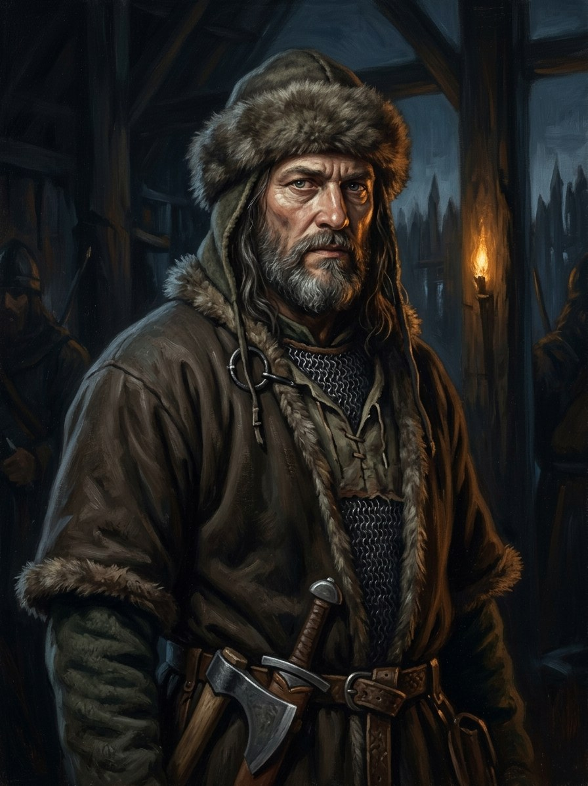

Jonas (vilkų vyresnysis)¶
Relations
Member of: Vilkatai (Iron Wolves)
Practises: Vilkų krikštas (wolf-change) — tier 3
Took part in: Vytautas burns Order castles; turns on the Order
Jonas (vilkų vyresnysis)

Jonas (vilkų vyresnysis) · character¶
Type |
character |
Years |
c. 1330–1384 |
Status |
The saga’s invention |
Note |
Elder of the Iron Wolves who re-assembles the pack after the 1382 purge at Trakai. |
Summary¶
Jonas, Kęstutis’s armour-bearer and pack-elder (vilkų vyresnysis) of the hidden nine, is the Loyal Hound of Book I, the oldest surviving Iron Wolf of Kęstutis’s guard. “Jonas” is a skin-name (kailio vardas): the baptismal name of an Order sergeant he killed at the gate in 1361 during Kęstutis’s escape from Marienburg, worn as a trophy, which is why a pagan wolf has a saint’s name. He serves the son because he swore to the father, leaves a horse at an oak for the fleeing Vytautas, leads the remnant band in 1384 and dies under the oak.
Appearance & tells¶
Grey-bearded, broad and quiet, in wolf-hide over quilted wool, no plate. His mark is the burned palm, the pack-elder’s brand, from carrying the pack’s single feast-day iron blade wrapped in linen. He does not drink Jogaila’s mead and will not drink from a hand that has not given bread (Book I ch. 2). Part of his soul stays wolf.
Want · Need · Lie · Truth¶
Want (external) |
To keep the oath he swore to Kęstutis by serving the son. |
Need (internal) |
To be told that the old law has an end, and that it may be broken without dying. |
Lie they believe |
That the Pack’s Word is the whole of the law. |
Truth they learn (or refuse) |
That a wolf’s law can be kept by the prince: Vytautas does not burn him but carries him to a bog (Book I ch. 25). |
Arc by book¶
Book VI (1361): the young wolf who kills an Order sergeant at Marienburg’s last gate and takes his Christian name (ch. 18, POV); at Rudau (ch. 24); in the epilogue (ch. 30).
Book I (1382-84): among the hidden nine at Kęstutis’s side (ch. 2); the silver wolf goes to Vytautas; is not in the tents when the guard is slaughtered at Jogaila’s camp; leaves a horse for the fleeing Vytautas at a named oak (ch. 15); leads the band at the burning of the Order’s castles in July 1384 and dies under the oak (ch. 25).
Power & magic¶
Granted, the Wolf-Change (Vilkų krikštas) from the Root-Mother via the Dykra: night-sight, scent, fast healing, the berserk “iron hour”. Vilkatai are not casters and sit outside the tier ladder. He lives by the Pack’s Word and by its nine laws, one of which, no Gediminid blood, is the Pact’s. Part of his soul stays wolf.
Record vs saga¶
[Historical record]: No such person in the record. The 1361 escape is real (Kęstutis fled Marienburg on 11 Nov 1361 with a servant, Alf, who removed bricks from the cell wall; veidas.lt, VLE); the Order sergeant at the gate, and Jonas, are the saga’s.
[The saga’s invention]: All of him: the skin-name, the burned palm, the hidden nine, the horse at the oak, the band of 1384. Book VI ch. 18 (his POV) shows how he took the name.
Pronunciation¶
JO-nas (/ˈjoːnɐs/), English respelling YOH-nahs. Paradigm 2: instrumental Jonù and locative Jonè are end-stressed; elsewhere the stress is on JO-.
Appearances¶
Book I: ch. 2, 4, 7, 8, 12, 13, 15, 25. Book VI: ch. 18 (POV), 24, 30 and the afterword. Not to be confused with Jonas Alšėniškis (Book II) or Jonas Goštautas.
Timeline¶
Year |
Event |
Book |
|---|---|---|
1384-07 |
I · Vilko Tremtis |
Connections¶
graph LR
ev_burnings_1384["Vytautas burns Order castles; turns on the Order"]
iron_wolves["Vilkatai (Iron Wolves)"]
jonas["Jonas (vilkų vyresnysis)"]
wolf_change["Vilkų krikštas (wolf-change)"]
jonas -->|Member of| iron_wolves
jonas -->|Practises| wolf_change
jonas -->|Took part in| ev_burnings_1384
style jonas stroke-width:3px